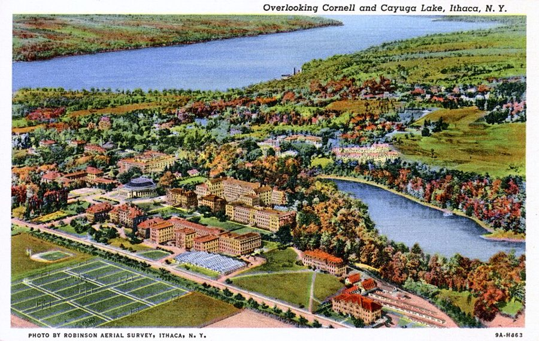
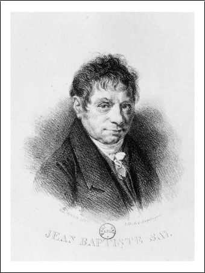
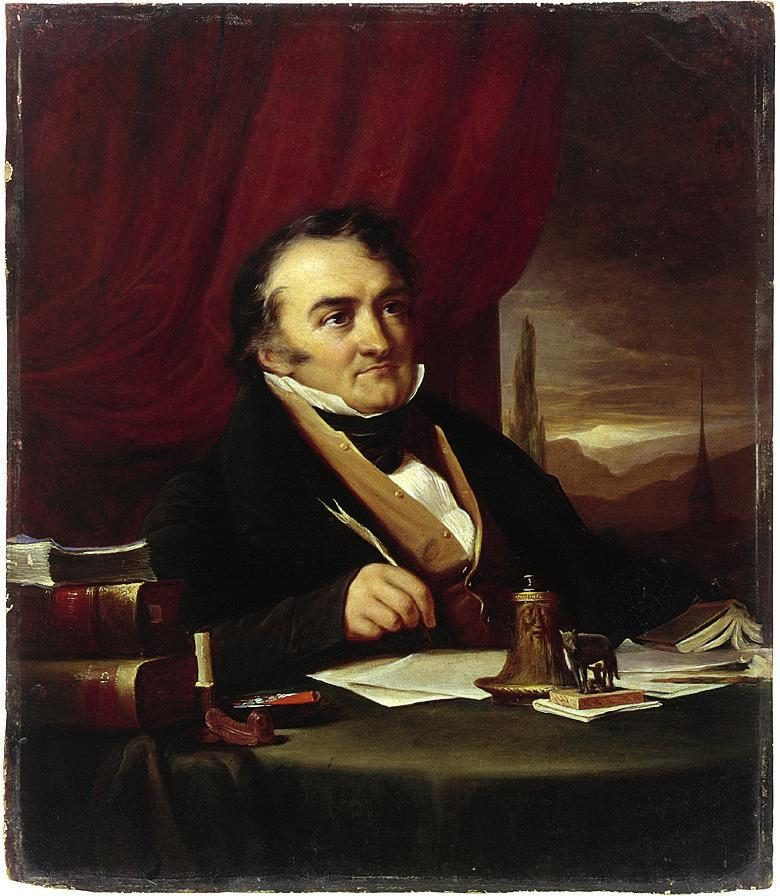

这一章在做什么
1965 年秋，三十五岁，他离开电话公司，到纽约州小城伊萨卡的康奈尔大学当助理教授，博士论文还没写完。这一页是头三年：为打分和系里顶了几回，论文推倒重来，合同到期等表决。最后一节黑人学生第一次进入视野，是后面一章半的引子。读的时候分清三位系主任，和他每次「不让」的是什么。
1965–66 学年
1966–67 学年
1967–68 学年
系主任
Doug（代理）
Frank
Tom（新任）
和系里
打分之争
缺考之争，想辞职
续聘表决
博士论文
原题目作废
1966 年夏起：改回萨伊定律，重写
别的事
1965 秋到校
1967.6 六日战争
1968.3 车祸
和一场四小时的会
本站示意图。美国的学年从秋天到第二年春夏。1967–68 学年是他头一份合同的最后一年。
出场的人
系里的同事只有名，没有姓，多半是化名。听书时最容易乱的是三个都被叫作 chairman 的人，外加一个也叫 Tom 的。
my wife 书里不写名字 妻子，开车接他下班。这一页她只说了三句话，三句都干脆。
Frank 正式的系主任 1964 年底请他来康奈尔的人。头一年休假不在，1966 年秋回来。脾气硬，老派。
Doug /dʌɡ/，头一年的代理系主任 热心各种运动，口才像演戏。为工程学生的分数闯进他的办公室。
Fred 前系主任 工程学生那门课是他当年开的。和气，绕了很大的弯才说到正题。
Tom 另一个 Tom，1967 年秋起的新系主任 只在第 5 节出现一次，一句话让作者没辞成职。
George Stigler /ˈstɪɡlər/，真名 芝加哥大学教授，他博士阶段的老师，第 5、6 章出过场。这里靠通信出现。
Jim 纽约的朋友 自由派。电话里拿他结婚这件事开玩笑。
Al 和 Mark 纽约的朋友 Al 是第 6 章那位激进派朋友，爱在嘴上占上风。Mark 是 Al 的老朋友，对以色列的看法和 Al 相反。
两个 Tom，一个 Marie。 同事们叫作者 Tom；第 5 节的新系主任也叫 Tom，那一句里的 He 是新系主任。第 3 节他对 Fred 说的 Marie 不是人，是一句老歌词，见词条。
康奈尔经济系（他的合同续不续，由系里的资深教授投票）
Frank
正式系主任，请他来的人
头一年休假
Doug
头一年的代理系主任
「学生也有权利」
另一个 Tom
1967 年秋接任系主任
说他课教得不错
Fred
前系主任
开了工程学生那门课
作者
助理教授，合同有期限
博士论文没写完
一位资深教授
没有名字
经济思想史是他的领域
系外
工学院的官员
打电话来问分数
George Stigler
芝加哥大学，管他的论文
本站示意图。作者 1965 年到校时，Frank 不在，系里的事由 Doug 代管。
背景：作者默认你知道的事
章名是一首歌

1939 年的明信片，从空中看康奈尔，远处是卡尤加湖。比作者到校早二十多年，地势是一样的：学校在高处，湖在下面。
Robinson Aerial Survey, Ithaca，公有领域，维基共享资源 Far Above Cayuga’s Waters 是康奈尔的校歌，1870 年前后由两个学生填词，头一句说母校高高立在卡尤加湖水之上。作者在第 1 节引了这半句，而且当实话用：校园在山上，下山进城时耳朵能感到气压在变。
大学和山下的小城几乎不来往，这层「高高在上」也在章名里。Cayuga 读 /keɪˈjuːɡə/ 或 /kaɪ-/。
康奈尔和伊萨卡
康奈尔大学 1865 年创办，常春藤八校之一，在纽约州中部的伊萨卡（Ithaca /ˈɪθəkə/），离纽约市三百多公里。小城在卡尤加湖南端，这条湖是窄长的「手指湖」（Finger Lakes）里的一条。
书里说全城人口还没有大学的人多。这种靠一所大学撑着的小城，美国人叫 college town。冬天长，雪大，第 8 节用得上。
助理教授、合同、终身教职
教授 professor
也说 full professor
副教授 associate professor
通常到这一级才有终身教职 tenure
助理教授 assistant professor
有期限的合同。作者在这一级
senior：资深的
助理教授是 junior
系主任 chairman
行政职务，不是职称
由资深教授担任，会换人
合同到期：资深教授开会投票
不续聘（走人）
续一年（论文快写完的）
续三年
三种结果是第 7 节里作者自己列的
本站示意图。职称是一条梯子，系主任是梯子旁边的一个差事。
美国大学的教师分三级。新人是助理教授，拿几年一期的合同，到期由系里的资深教授投票决定去留。升上去拿到终身教职（tenure）以后，学校基本不能解聘。
那时博士论文没写完就受聘很常见，但合同期内写不完，照例不续。系主任由教授担任，会换人，所以这三年里他碰上三位。
按曲线给分
美国大学的成绩是 A 到 F，F 是不及格（fail，口语叫 flunk），拿不到学分。打分有两种办法。一种是事先定死分数线，书里叫 absolute scale，他的及格线是 55 分。
另一种叫 grading on a curve：按全班的分数分布来划线，大家都考得差，线就跟着降，总有人得 A，多数人能过。第 3 节的整场争执，就是学生和校方想要后一种，他只肯用前一种。
萨伊定律和那篇论文
萨伊定律（Say’s Law）后人常概括成「供给创造自己的需求」：生产出东西的同时也就有了买别的东西的收入，所以不会所有商品一齐卖不掉。「一齐卖不掉」叫 general glut，西斯蒙第是当年主张这种事会发生的人之一。
作者想写的是这场争论的历史。这个题目在第 6 章被导师 Stigler 劝退过一次。Stigler（1911–1991）是芝加哥学派的代表人物，1982 年得诺贝尔经济学奖。

萨伊（Jean-Baptiste Say，1767–1832），法国经济学家。Achille Devéria，公有领域，维基共享资源 
西斯蒙第（Sismondi，1773–1842），生于日内瓦，用法语写作。画于 1828 年前后。Amélie Munier-Romilly，公有领域，维基共享资源
1965 到 1968：校园在变
这三年正是美国大学变样的时候。1964 年《民权法案》通过，1965 年起越战升级，学生运动从加州蔓延到各地；1966 年「黑人权力」（Black Power）的口号出现。
北方的名校开始成批招收黑人学生。书里的变化很具体：1965 年他似乎是校园里唯一的黑人教授，班上没有一个美国黑人学生；到 1968 年，黑人学生已经不少。第 9 节里带引号的 relevant、establishment、sold out，都是那几年的流行词。
留个记号：后面还会回来
这一页里作者自己点出「当时还不知道」的地方不多，更多的是从前面接过来、往后面递过去的线。
学术界比公司更糟 第 1 节 同事以为他在说笑。他指的是第 6 章在两所学校教书的经历。这句话在康奈尔会不会再应验一次，往下读。
uncompromising 第 3、5、7 节 分数、缺考、合同，三件事他都没让。第 7 节别人给他的评语就是这个词。先记住，本章下半用得上。
回到老题目 第 4 节 萨伊定律是第 6 章被 Stigler 否掉的题目，这里他又捡了回来。论文的下落在下一页。
「起初并不知道」 第 9 节 他说黑人学生多数是按较低的录取标准招进来的，但当时他不知道。他怎么知道的、怎么看这件事，在下一页和第 8 章。
词与短语
词条按书里出现的顺序排，小标题是原书用 • • • 隔开的各节。斜体小字是那句话里的几个词，在 Kindle 里搜它就能跳到那一句。单个的生词长按就能查，这里收的主要是词典帮不上忙的。
第 1 节 · 山上的校园
teaching load
… My teaching load was the lightest …
教学工作量
按一学期教几门课算。两门算很轻。
prodigal son
… as a prodigal son returning from …
回头的浪子
出自《路加福音》：小儿子在外把家产花光，回家时父亲照样欢迎。同事的意思是：你总算从商界回到正路上了。
dog-eat-dog
… the dog-eat-dog world of business. …
你死我活、互相倾轧的
token
… I was a “token” black appointment, …
装点门面用的
为了显得不歧视，象征性地聘一个少数族裔。这个意思的 token 是 1960 年代的新词。
stop dead in one’s tracks
… stopped dead in our tracks and …
当场愣住，站着不动了
dead = 完全地。tracks 是脚印。
in demand
… was more in demand than the …
吃香，找他的人多
out of the financial league of
… way out of the financial league …
花销不是一个档次，高攀不起
league 是球队的联赛级别。out of my league = 不是我够得着的。
enrol in
… black American student enrol in my …
选（我的课）
美国通常拼 enroll。大学里学生自己选课，选了才算 enrolled。
第 2 节 · 第一张工资单
flies in the ointment
… number of flies in the ointment …
美中不足的事，煞风景的地方
字面是药膏里的苍蝇。通常说 a fly in the ointment ，这里是复数：不止一处。
take a cut in salary
… taken a hefty cut in salary; …
工资降了一大截
cut = 削减。hefty = 分量不小的。
fringe benefits
… some fringe benefits paid for by …
工资以外的福利
医疗保险、养老金之类。fringe 是边缘、流苏。
take-home pay
… shrinking my take-home pay even more. …
扣完各项后到手的钱
misplace the decimal point
… “Did they misplace the decimal point?” …
小数点点错位了吧？
妻子的意思是：这数目少得像是少写了一位。
almost human
… has made you almost human, Tom,” …
差不多像个人了
朋友之间的损话。后半句更损：再过五年，你看见老太太摔断腿也会觉得难过了。
a liberal
… Jim was a liberal and, to …
自由派
美国用法：政治上偏左、主张政府多管社会事务的人。和中文里「自由主义者」的意思差得远。
just mean
… who opposed liberals were just mean. …
纯粹是心肠坏
mean 是形容词：刻薄、没同情心。这是作者替 Jim 那一派总结的看法，带着刺。
第 3 节 · 工程学生的分数
liberal arts
… the regular liberal arts undergraduates at …
文理学院的（本科生）
和上面的 liberal 无关，也不等于「文科」。指文、史、哲、数、理这些基础学科，相对于工、农、商等专业学院。
John Stuart Mill
… great prestige which John Stuart Mill …
约翰·斯图尔特·穆勒
1806–1873，英国哲学家、经济学家，《论自由》的作者。下一句是学生的玩笑：讲一堂经济学，什么人群都能驱散。
too well received
… too well received, as it turned …
受欢迎得过了头
received 指反响。as it turned out （后来才知道）预告下一段有麻烦。
word gets back to
… seminar may have gotten back to …
话传到了……耳朵里
word 不带冠词 = 消息、风声。
junior man
… a new and junior man being …
资历浅的人
junior、senior 在大学和公司里说的是级别，不是年龄。作者这时三十五岁。
Rank has its privileges
… field. Rank has its privileges. I …
官大一级，自有特权
美军里的老话，缩写 RHIP。作者当过海军陆战队员，拿军队的规矩来说大学，是挖苦。
at the opposite pole from
… was at the opposite pole from …
和……正好是两个极端
coast on
… not let them coast on what …
靠（已有的本事）混过去
coast 作动词：车不踩油门靠惯性滑行。
be called on
… prepared to be called on in …
被点名回答问题
和 call on（拜访）不是一回事。
breathers
… liberal arts courses as “breathers” in …
喘口气的课，水课
breather 本义是歇一口气的工夫。第 4 节的 take a breather 是本义。
frills on the reading list
… were just frills on the reading …
阅读书目上的摆设
frills 是花边。学生认定只有教科书要看，其余指定读物可以不理。
responsible for … on the exam
… are still responsible for this topic …
这一部分考试照样要考
教师的行话：不讲了，但你们自己负责学会。
Mr. Sowell
… “Mr. Sowell, I am in no …
索维尔先生
他还没有博士学位，不能称 Dr.。整段电话里对方一直客气，句句以 But 开头。
I’m not worried about your doing that
… not worried about your doing that.” …
这个我倒不担心
对方说「我绝不是想影响你怎么教」，他答的是：你也影响不了。听着客气，其实是顶回去。
an absolute scale
… and stuck to an absolute scale.” …
固定的分数线
见上面「按曲线给分」。stick to = 咬住不放。
grade on a curve
… I have never graded on a curve, …
按全班分数分布来给分
这一节的关键词。curve 指成绩的分布曲线。
flunk
… you prepared to flunk half the …
给……不及格
美国校园口语，= fail。也可以说学生自己 flunk a course 。
get nowhere
… find they are getting nowhere complaining …
（告状）一点用也没有
acting chairman
… later, the acting chairman of the …
代理系主任
acting 放在职务前 = 代理。和下面说他像在演戏正好凑成双关，不知是不是有意的。
personable enough
… was a personable enough fellow, quickwitted …
人倒还算讨喜
personable 是讨人喜欢，不是 personal。形容词加 enough，后面多半跟着「可是」。
by no stretch of the imagination
… by no stretch of the imagination …
怎么也算不上
字面：想象力再怎么拉伸也够不着。
a performance coming on
… of his better performances coming on …
一场好戏要开演了
come on = 即将发作、上场，常用于感冒和头疼。把系主任进门说成演出，是讽刺。
not as chairman
… talk to you, not as chairman,” he …
不是以系主任的身份
嘴上放下身份，来办的却是系主任的事。作者让他说完，只回两个词。
goof off
… of the engineering students goofed off,” …
偷懒，混日子
美国口语。下一页讲暑期班时还会出现。
work something out
… sit down and work something out.” …
商量出一个办法
听上去中立，实际是请他让步。
not budge an inch
… I don’t plan to budge an …
一寸也不让
budge /bʌdʒ/：挪动一点点，几乎只用在否定句。
on good terms with
… whom I was on good terms, …
和……关系不错
terms 在这里是交情，不是条款。
feel rotten
… I really feel rotten even having …
心里很过意不去
rotten 本义是腐烂。bring up = 提起（话头）。
put up a fight
… you’re putting up a fight to …
奋力抵抗，硬顶
Fred 先夸后转，这一句是「夸」的部分。
get the message
… I think they’ve gotten the message,” …
已经领教了，明白你的意思了
make up for
… a paper to make up for …
弥补
do a paper = 写一篇课程论文。
Marie, the dawn is breaking
… “Marie, the dawn is breaking,” I …
我总算听明白了
欧文·柏林 1928 年的歌 Marie 的第一句，原意是天亮了。他借来说「我这才开窍」。Fred 没听懂，回了一声 Hmm?
outs
… going to figure out ‘outs’ for …
退路，脱身的口子
out 作名词。give someone an out = 给他一个台阶。
facesaving
… I said. “That’s just facesaving.” …
保全面子
通常写 face-saving。face 的这个意思是从中文「面子」借过去的。
renew your contract
… whether to renew your contract when …
续你的聘
Fred 最后亮出来的牌。见上面的职称图。
as I see fit
… my own decisions as I see …
照我认为合适的办
他把同一个短语回敬给对方：你们投票时也请自便。
you needn’t worry any more
… you needn’t worry any more about …
你不用再担心了
反着说：咱们不用担心会在伊萨卡住一辈子了，意思是饭碗大概保不住。
give ’em hell
… “In that case, give ’em hell.” …
那就跟他们干到底
’em = them。杜鲁门 1948 年竞选时支持者喊的 Give ’em hell, Harry! 让这句话家喻户晓。
第 4 节 · 论文推倒重来
hit a snag
… hit a snag after several months. …
卡住了，碰到意外的障碍
snag 是水下会钩住船的树桩。
back to square one
… I was back to square one, …
回到起点，一切从头来
language requirements
… on fulfilling my language requirements for …
（博士学位的）外语要求
当时读博士要通过两门外语的阅读考试，所以他去捡法语。
to the contrary notwithstanding
… Stigler to the contrary notwithstanding. By …
尽管 Stigler 的看法相反
法律文书的句式，notwithstanding 放在最后。用在自己的导师身上，半是郑重半是玩笑。
put out of court
… of thought was put out of court …
被排除在外，不予考虑
字面是不准进法庭。不是「庭外和解」。
glut theories
… (both glut theories and supply-demand …
关于「过剩」的各种理论
glut /ɡlʌt/：商品多到卖不掉。见上面「萨伊定律」。
by default
… become the world’s authority by default. …
因为没有别人，自动成为
和电脑的「默认值」同一个词。这里是挖苦：没人研究的题目，谁写谁就是权威。
not famous for
… he was not famous for was …
并不以……出名
往轻里说：Stigler 是出了名的没耐心。
with his blessing
… on Say’s Law, with his blessing, …
得到他的首肯
blessing 这里没有宗教意思。
第 5 节 · 差一点辞职
run-ins
… Despite my run-ins with other senior …
冲突，顶撞
windfall gain
… This windfall gain was of course …
意外得来的好处
windfall 是被风吹落的果子。经济学里的术语，他顺手用在自己身上。
mild qualms
… which caused me mild qualms was …
一点不安
qualms 读 /kwɑːmz/，l 不发音。
the bloom is off the rose
… the bloom was definitely off the …
新鲜劲儿过去了
head-hunting firm
… resume to a “head-hunting” firm specializing …
猎头公司
当时还是新说法，所以加了引号。
cheap expediency
… like the cheap expediency and petty …
图省事、不讲原则的权宜做法
cheap 这里是「低劣」，不是便宜。petty intrigues ：鸡毛蒜皮的勾心斗角。
crusty
… Frank was a crusty old fellow, …
脾气又硬又冲的
crust 是面包的硬皮。
back talk
… giving him a lot of back …
顶嘴
本来是说小孩对大人的。
be cut out for
… that I was cut out for. …
是干……的料
裁衣服的比喻。Frank 的话是：你也许不是教书的料。
That did it
… cut out for. That did it. …
这下够了，就是这句话让我下了决心
cut the ground out from under
… This cut the ground out from …
让……一下子没了立足的理由
新系主任一句「没听说有问题，只听说你课教得好」，他辞职的由头就没了。
第 6 节 · 和 Al 吃饭
the Six Day war
… Arab states in the Six Day …
六日战争
1967 年 6 月 5 日到 10 日，以色列对埃及、叙利亚、约旦，六天取胜。
be one-up
… Al to be verbally one-up, I …
（嘴上）压人一头
体育比分的说法：领先一分。
studiously avoid
… Therefore I studiously avoided the subject, …
存心只字不提
studiously 这里是「刻意地」，和用功无关。
bon mots
… no occasion for his bon mots. …
俏皮话，妙语
法语，读 /ˌbɒn ˈmoʊ/，t 和 s 都不发音，听书时认不出来。
kosher
… long as the food is kosher.” …
合犹太教规的（食物）
读 /ˈkoʊʃər/。憋了一晚上，他用这一个词把中东话题带了出来。
grave dignity
… a certain quiet and grave dignity, …
一本正经的庄重
grave 是形容词：严肃的。不是坟墓。
第 7 节 · 续聘表决
contingent on
… a three-year extension, contingent on completion …
以……为条件
后一句的 not contingent on anything 就是无条件。
knife you in the back
… could knife you in the back …
背后捅你一刀
at the outset = 一开始。
wouldn’t stand for it
… the others wouldn’t stand for it, …
不答应，不容许
stand for 在否定句里 = 容忍。shut right up ：马上闭了嘴。
term of opprobrium
… The worst term of opprobrium used …
骂人的字眼
opprobrium /əˈproʊbriəm/：公开的责骂。用这么重的词来引出一个不算骂人的评语，是故意的。
第 8 节 · 雪天的车祸
give a paper
… was scheduled to give a paper …
在会上宣读论文
paper = 学术论文；give = 当众讲。
resign oneself to
… I resigned myself to whatever was …
认了，听天由命
和辞职无关。
didn’t care to
… However, I didn’t care to have …
不大愿意
说的是被方向盘捅穿身体。用最客气的说法讲最可怕的事。
the front bench
… lay down across the front bench …
前排的连体长座
那时美国车的前排常是一整条长座椅，中间没有隔断，人可以横着躺下。
a total loss
… The car was a total loss, …
全毁，报废
保险用语，口语里说 totaled 。
glad to be anywhere
… it. I was glad to be anywhere. …
不管在哪儿，能在就好
把客套话 I’m glad to be here 拆开用：还活着，在哪儿都高兴。
第 9 节 · 四个小时的会
hard-nosed
… being steered away from hard-nosed professors, …
不讲情面、要求严的
steer away from ：引着绕开。他拿运动员作比：校队队员常被指点着避开严的老师。
patrons
… their various white faculty patrons were …
靠山，庇护人
不是「顾客」。用这个词带着讥讽：这些教授把学生当成自己保护的对象。
be billed as
… Although the meeting was billed as …
对外说成是
bill 是演出海报。言下之意：实际并不是。
line people up behind
… meeting to line people up behind …
拉人站队支持
relevant
… wanted education that was “relevant,” such …
「切合现实」的
1960 年代学生运动的口号：课程要和当下的社会问题直接相关。引号是作者加的，表示他不认这个用法。
sophomoric
… the students said was sophomoric, but …
自以为是而幼稚的
sophomore 是大二学生。后半句是双关：大二学生说大二水平的话，本来如此。
sold out
… think that I had “sold out” …
卖身投靠，背叛了自己人
那几年骂人「叛徒」的常用词。这一句是反话：倒好像是我为了一个助理教授的位子出卖了谁。
tenured
… while these tenured white activists were …
有终身教职的
读 /ˈtenjərd/。对比在这里：丢不了饭碗的是他们，合同还悬着的是他。
know better
… He knew better all along. It …
心里明白那不对
不是「知道得更多」。all along = 从头到尾。
politic
… It just wasn’t politic to say …
（说出来）不明智，不合时宜
形容词，重音在第一音节 /ˈpɑːlətɪk/。不是 political。
值得停下来的句子
My theory was that education should supply what people lack, not let them coast on what they already know.— 第 3 节，解释他为什么不给工程学生用数学。本站译：我的想法是，教育该补上人缺的东西，而不是让他们靠已经会的东西混过去。
主干是 education should supply …, not let … ，逗号前后是一正一反。前面刚说过，他在霍华德教书时特意多用数学，到了康奈尔的工程学生面前反而一点不用：同一条道理，对两种学生开出相反的方子。
学生想要的正好是 coast。这一节后面所有的电话和谈话，都是这句话引出来的。
The worst term of opprobrium used against me in the meeting, I was told, was that I was “uncompromising.”— 第 7 节，续聘表决之后。本站译：听说会上骂我骂得最重的一个词，是说我「不肯妥协」。
I was told 是插进来的：这是事后别人转述的。句子前半用了很重的 term of opprobrium ，读者等着听一句狠话，最后落下来的是 uncompromising。在那些同事嘴里这是缺点，他把它单独写成一段，不加一个字的评论，显然是当奖状收下的。
检查一下理解
先在心里答，再点开。答错的那题，回书里把那一节再读（或再听）一遍。
1. 同事把他当「回头的浪子」欢迎。他回了什么？是在开玩笑吗？ 他说，在电话公司听到的最坏的传闻，也比不上他在学术界亲身碰到的事。同事当他说笑，他是当真的。这句话把后面几节的冲突先预告了。
2. 研究生讨论课很成功，为什么他在康奈尔再也没教过这门课？ 正因为太成功。学生说等了很久才等到一门「真正的」思想史课，这话传到同一领域的一位资深教授那里，对方强烈反对让一个新来的、资历浅的人教他地盘上的课。Rank has its privileges 是作者的冷嘲，不是他认同这个规矩。
3. Fred 提议让学生另写一篇论文来补分数，说这不算改分。作者为什么不接受？Fred 最后拿出了什么理由？ 作者认为标准是开学第一天宣布的，事后再给不达标的人找出路，标准就等于没有；让学生多干点活只是保全面子。Fred 接着说工学院为这门课付钱给经济系，又提醒他：将来投票决定续不续聘的人里就有自己。
4. 妻子问「要是被解雇呢」，听了回答后说 give ’em hell。她是在生气吗？ 不是。他答的是：那就回企业上班，正好多挣点。她的意思是：既然这样，放手去顶。这一页她三次开口，都站在他这边，而且比他还干脆。
5. 1967 年夏天他去系办公室辞职，为什么没辞成？ 他要找的是 Frank，可系主任已经换成另一位也叫 Tom 的同事。新系主任说不知道他和 Frank 闹到这一步，还说听到的都是他课教得好。辞职的理由本来是 Frank 那句「你也许不是教书的料」，这下落了空，他决定把合同做完。
6. 四小时的会散了以后，那位同事在停车场说 “Of course”，是什么意思？ 意思是「当然，你说得对」。他本来就认为学生的方案对学生自己没好处，但会上一句没说，因为说出来不合时宜。作者写这一幕，气的不是意见不同的人，是心里明白而不开口的人。